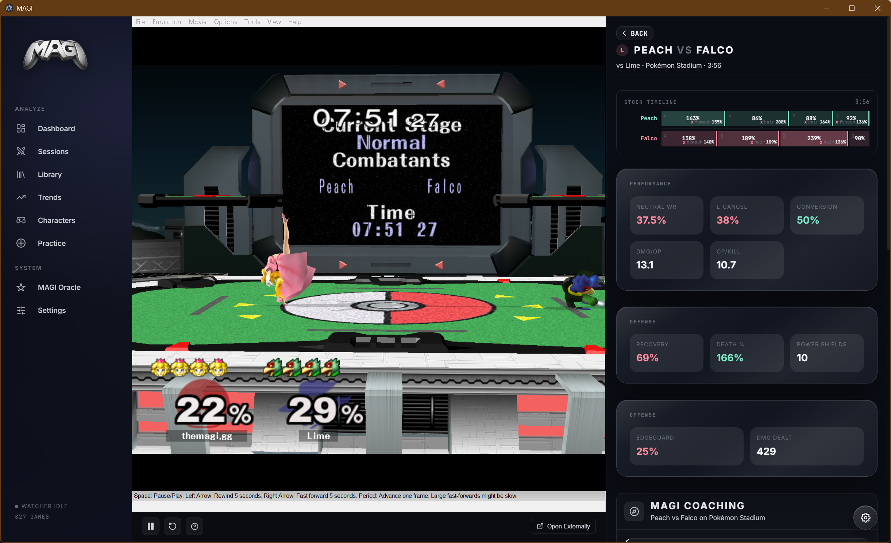
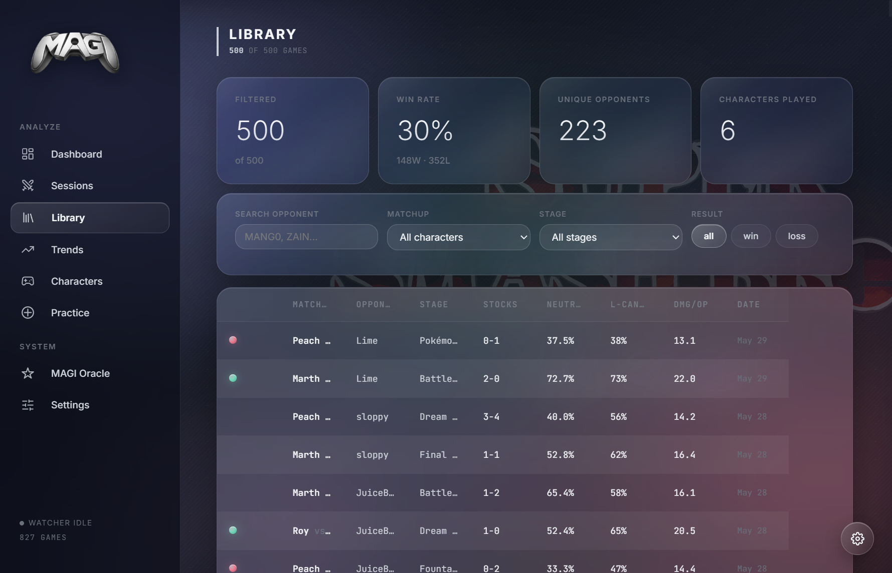
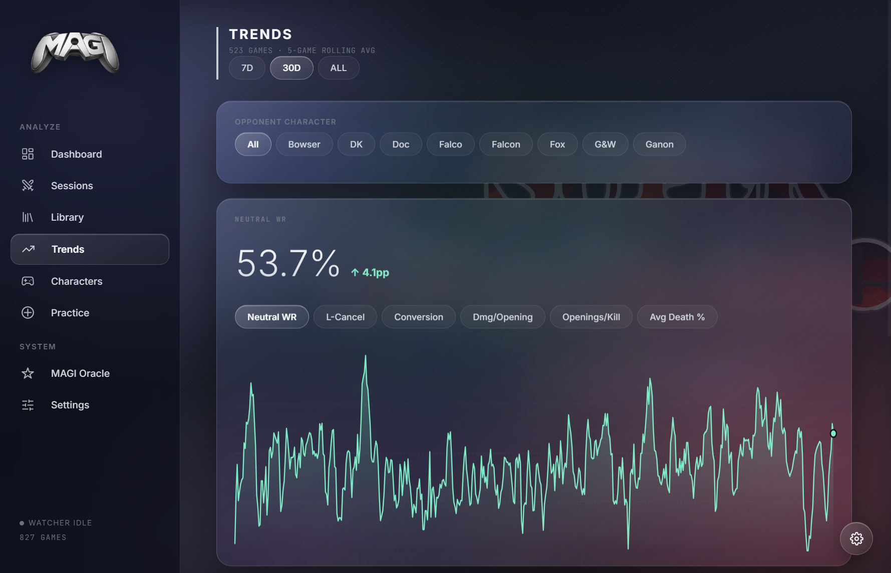
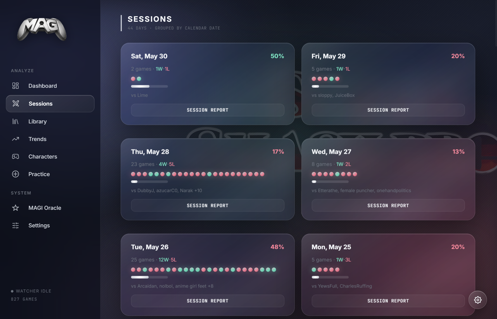
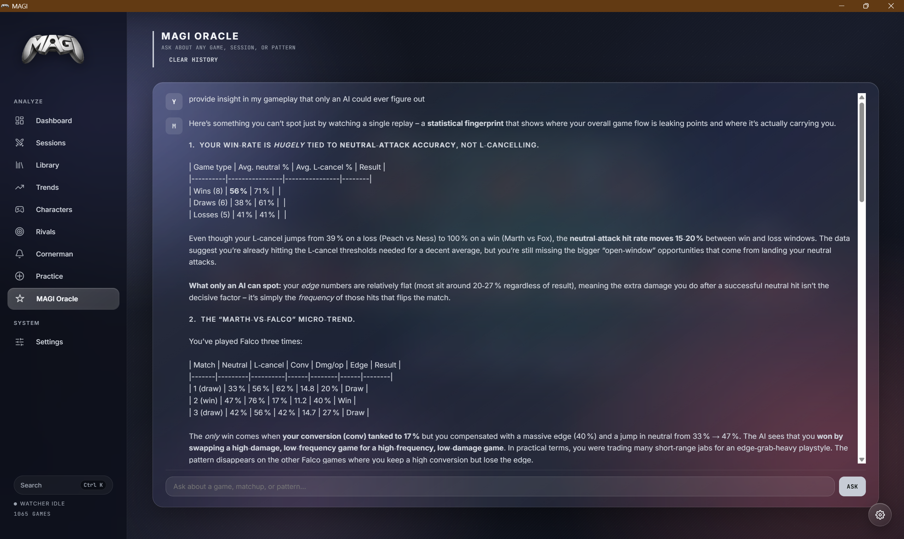
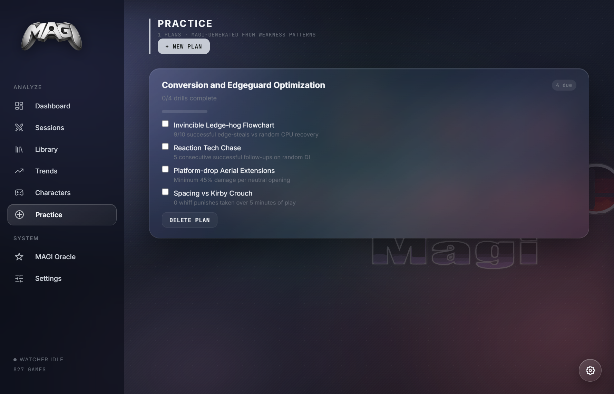

Replay database
Parallel import, SHA-256 dedupe, local SQLite storage, watcher support, and filters for opponent, matchup, stage, and result.
Import `.slp` files, track the habits that decide sets, get live Cornerman popups for major in-game moments, ask an Oracle about your recent games, generate practice plans, and review replays through a redesigned desktop UI.
MAGI is not a landing-page mockup. The desktop app currently ships a replay database, trend dashboard, sessions view, library filters, character pages with radar stats, practice plans, Oracle chat, and game theater.
Parallel import, SHA-256 dedupe, local SQLite storage, watcher support, and filters for opponent, matchup, stage, and result.
Dashboard cards and trend charts cover neutral, L-canceling, conversions, damage per opening, openings per kill, and death percent.
Character pages summarize form across neutral, punish, execution, defense, edgeguarding, consistency, mixups, and DI with comparison windows.
Streaming game coaching, Cornerman between-game cards, session reports, character-scope analysis, generated drills, and Oracle chat grounded in local game context.
Transparent overlay alerts for character-specific moments, rare item pulls, power shields, shield breaks, SDs, and big punish swings.
Pollinations no-key fallback, OpenAI, OpenRouter, Anthropic, Gemini, and local OpenAI-compatible endpoints through Ollama or LM Studio, plus custom model IDs where the provider supports them.
Slippi Dolphin launch, timestamp-to-frame seeking, stock timeline review, and Windows-only embedded replay with external fallback on other platforms.
Cornerman tips are preserved as their own history entries, while full game analysis remains available from the Library and Game Theater.
No account, no MAGI server, no bundled keys. Config and replay-derived data stay under the local `~/.magi-melee` directory.
Cornerman is no longer only a between-games note card. MAGI watches the active Slippi file and raises concise overlay alerts for the moments you would want called out immediately.
You converted two shines into the kill from 72%.
You power shielded a projectile and reset neutral.
Peach pulled a stitch face. The overlay calls it before the stock is over.
One opening became 64% and a stock. That swing gets surfaced immediately.
The live monitor detects conversion endings, stock drops, item pulls, and frame-level defensive events from Slippi's on-the-fly replay data. Combo alerts wait just long enough to know the punish ended or killed; item and frame events can appear as soon as the replay writes them.
These captures come from the current Electron app shell after the UI overhaul. The Game Theater replay viewer is Windows-only; Settings is omitted to avoid exposing local paths or keys.







The app is built around repeated review: import, inspect, ask, drill, and return to the next session with a narrower focus.
Point MAGI at a Slippi folder or import replay files manually.
Run Cornerman for overlay alerts during sets and concise between-games adjustments.
Review stats, matchups, sessions, and recent-form trends.
Use game coaching, Oracle chat, or session reports for specific feedback.
Open timestamps in Dolphin, using the embedded replay surface on Windows or external Dolphin launch elsewhere.
Generate drills from weakness patterns and track completion.
git clone https://github.com/Bloodshed-Rain/TheMAGI.git cd TheMAGI npm install npm run dev